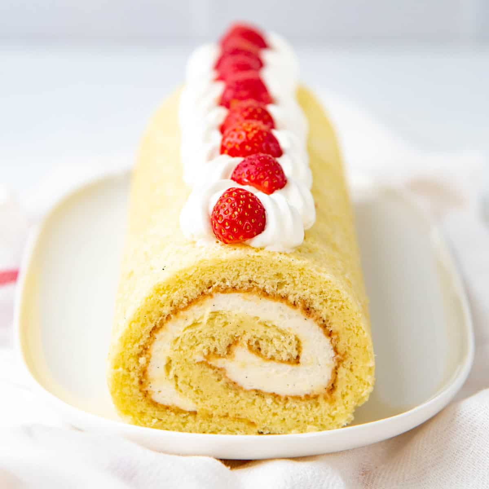

Strawberry Shorcake |
INGREDIENTS
1 quart fresh strawberries sliced
, ¼ cup white sugar,
1 (12 ounce) package prepared sponge cake dessert cups,
1 (7 ounce) can whipped cream
|
STEPS
Place strawberries in a bowl; add sugar and stir to coat. Cover and refrigerate until sugar has dissolved, about 15 minutes.
Place 1 dessert cup in each serving bowl and smother with strawberries. Top each with whipped cream.
|
Spongecake |
INGREDIENTS
Cake flour, Eggs, Sugar, Vegetable Oil, Baking Powder
|
STEPS
First, beat the egg whites to firm peaks. The tips should fall but the base of the meringue should hold its shape.
Next, beat the egg yolks, sugar, salt, vanilla, honey, and water together until pale yellow and fluffy. Gradually increase to high speed for best results.
Combine half the egg whites with the egg yolk mixture and gently fold being careful not to deflate any of the egg whites or egg yolk mixture.
Sift in the cake flour and baking powder and fold gently. Next add the vegetable oil. Tip: To help incorporate the oil, first mix in a bit of batter with the oil. Then add to the remaining batter.
Add the remaining half of the egg whites and gently fold together.
Pour into a six inch cake pan lined with parchment paper and bake at 350 degrees F until a toothpick comes out clean.
|
| Swiss Cake Roll |
INGREDIENTS
Eggs, strawberries, flour, sugar, vanilla, butter, oil, baking powder, cream, salt,
|
STEPS
First, you need to prepare your pan. Butter it really well, then line it with parchment paper. Then butter the parchment paper. This will ensure that the parchment paper stays in place and the cake doesn’t stick to it.
Sift the flour, baking powder and salt into a bowl. Then set it aside.
In a large mixing bowl, beat the eggs and sugar together. Start on low and gradually increase the speed to high and beat for about 5-8 minutes, until the mixture is thick and yellowish.
Add the oil and vanilla and mix for 1-2 minutes more.
Gradually fold in the flour mixture, a little at a time, until it’s well combined. Don’t overwork it, though, otherwise you'll deflate the air that’s been incorporated.
Pour into the baking tray and spread it out evenly covering the corners and edges.
Bake the cake. When done, take the cake out of the oven and place on a cooling rack. Gently and carefully pull apart the parchment paper from the edges of all the sides of the cake.
Generously dust a clean kitchen towel with powdered sugar.
Immediately line the cake upright against the towel and let it drop on top of it.
Carefully remove the parchment paper.
Place the short end of the cake right in front of you. Then gently start rolling the cake together with the towel, but not too tightly.
Let the cake cool, as it is with the towel rolled up, for 1 - 1 ½ hours.
|